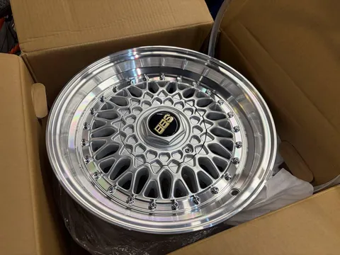
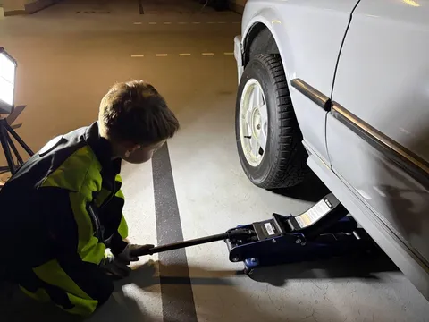
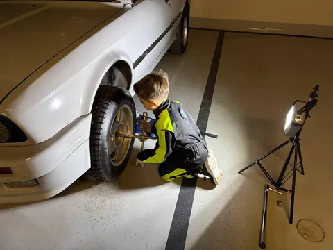
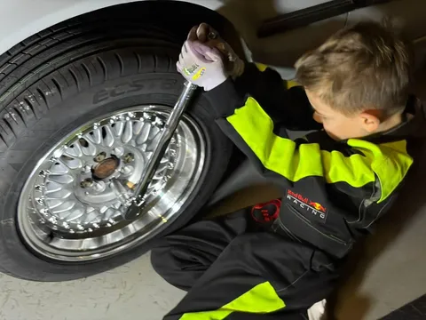
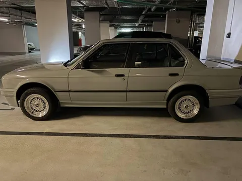
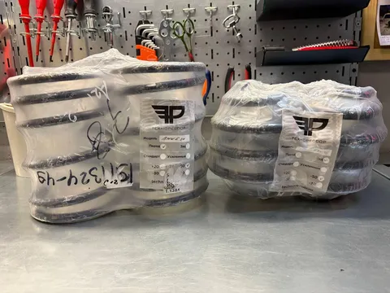
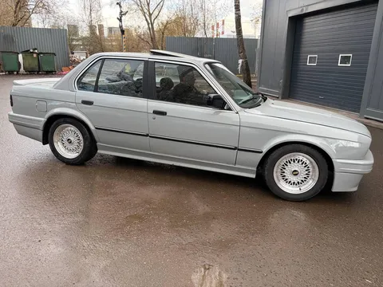
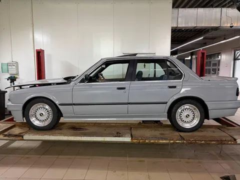
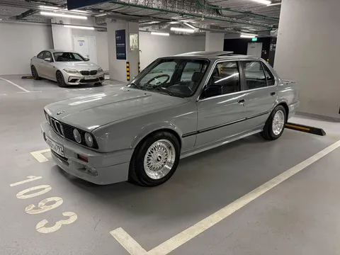

Считается, что любая машина становится конфеткой, если следовать простой формуле - "колеса+посадка". Мышь - не исключение, просто эти этапы мы все откладывали к весне. И вот - пора.
Как ни странно, особых мук выбора не было. С дисками я рассматривал несколько вариантов, включая альпиновские и даже те37, но остановился на классике - "пятый стиль", который у bmw был в исполнении bbs. Перекинули колеса сами. Лёхе особенно впёр сам факт, что он может взять и поднять машину (ну в смысле домкратом, но тем не менее). Правда, в попытке ослабить гайки я натурально порвал удлиннитель для динамометрического ключа, так что пришлось мучаться с обычным крестообразным баллонником, убивая руки. Тем не менее, успех!
С пружинами оказалось чуть сложнее. На куче сайтов есть пружины с занижением на е30, но в наличии их не было ни у кого, а сроки поставки - пара месяцев. Уже было думал ставить койловеры, но на барахолке нашел у одного продавца пружины Технорессор (новые, в упаковке), давно снятые с производства, притом по очень хорошей цене. Съездил в сервак, поставил, съездил в другой - сделал сход-развал (заодно руль прямо встал, вообще подарок). Итого, имеем по -50мм на обеих осях, машина перестала казаться джипом - ровная посадка, но без излишеств (стонс не предлагать).
И, наконец, мы достигли того момента, когда при появлении Мыши в серваке все механы сбегаются плюбоваться и цокают языками, ай какая ляля. Это ли не высшая степень признания? #лёха_строит_бэху
P.S. Знаю, что многие мои подписчики работают в БЦ Нева, вам эксклюзив: сегодня Мышь стоит на паркинге -1, можно смотреть и щупать!








